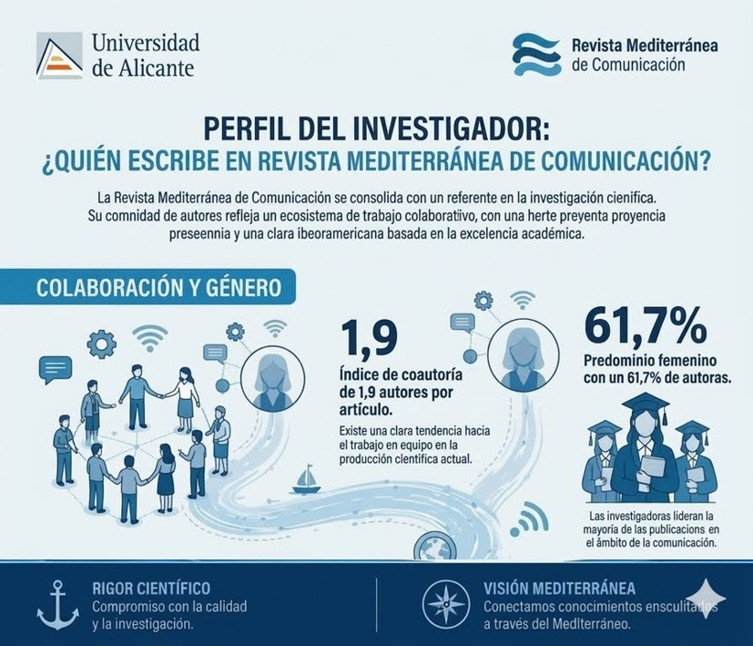
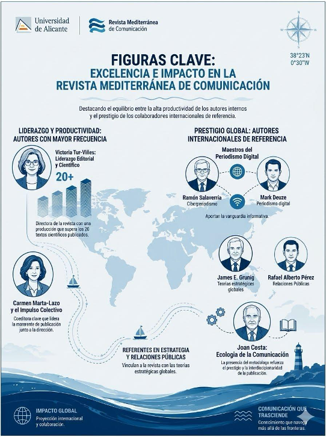
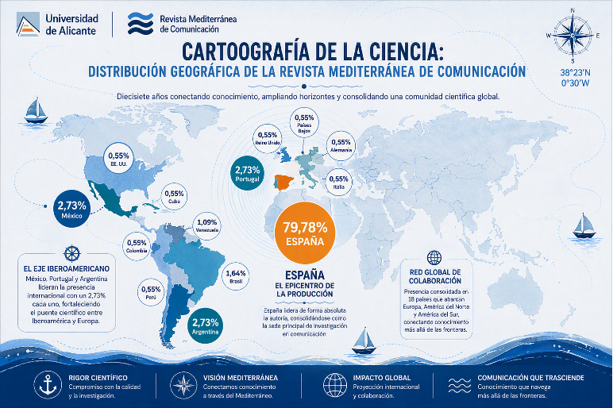
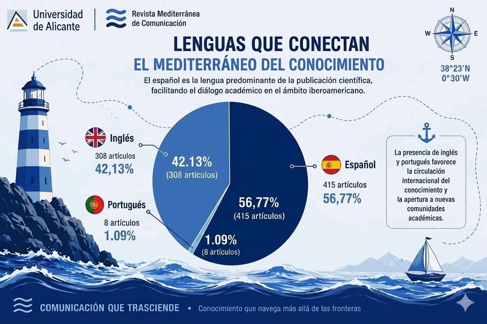
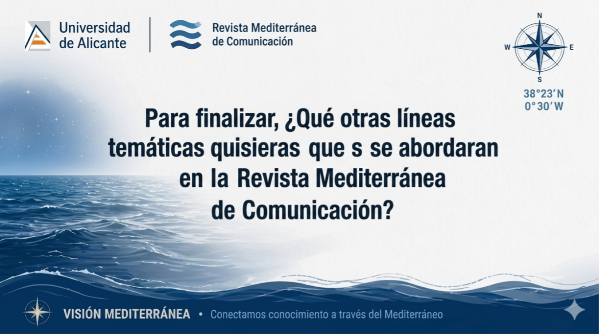

Trayectoria editorial
Desde su creación, Revista Mediterránea de Comunicación ha mantenido una evolución constante, consolidándose como un referente en la investigación científica en comunicación. La gráfica presenta la trayectoria editorial de la revista entre 2012 y 2026, permitiendo explorar el volumen de publicaciones por año y la composición de cada edición según su tipología documental. Esta visualización ofrece una lectura de la madurez editorial alcanzada por la revista, evidenciando su crecimiento sostenido, la diversificación de sus contenidos y la continuidad de su labor como plataforma para la difusión de la investigación en el contexto iberoamericano. Para observar la evolución editorial puedes mover el círculo azul debajo de la imagen y observar año por año la producción científica correspondiente" algo así que le diga que mueva el botón azul.
Fuente: Elaboración propia con información proporcionada por la Revista Mediterránea de Comunicación (julio de 2026). Nota: La visualización fue elaborada por las autoras con apoyo de inteligencia artificial generativa.
La estela de la ciencia: Un impacto global con sello iberoamericano.
A lo largo de nuestra trayectoria, la comunidad científica internacional ha consolidado un ecosistema de coautoría dinámico, con un promedio de 1.9 firmas por artículo. Con una sólida base arraigada en España, nuestra producción científica destaca por un marcado liderazgo femenino, alcanzando el 61.7% de autoras. Esta sólida red, enriquecida por la diversidad metodológica y conceptual de redes de colaboración en toda Iberoamérica, amplía de manera exponencial nuestra comprensión de las realidades comunicativas actuales.

Nuestra comunidad académica: Liderazgo, prestigio e impacto global.
El valor fundamental de nuestra revista reside en el rigor de sus procesos editoriales y la calidad de su comunidad científica. En el ámbito del liderazgo y la alta productividad, destaca la producción científica de las doctoras Victoria Tur-Viñes y Carmen Marta-Lazo, referentes clave en la producción colaborativa y la dirección editorial. Asimismo, el prestigio internacional de la publicación se consolida gracias a las contribuciones de figuras de la talla de Ramón Salaverría y Mark Deuze en el ecosistema del periodismo digital, junto a teóricos emblemáticos de la comunicación y las relaciones públicas como James E. Grunig, Rafael Alberto Pérez y Joan Costa.


Cartografía de nuestra investigación: Faros temáticos en la vanguardia científica.
A lo largo de nuestra trayectoria, las líneas de investigación de la revista han trazado rutas alineadas con las demandas y transformaciones de cada momento histórico. Sobre una sólida base científica dedicada al estudio de las redes sociales, la televisión, la publicidad, el periodismo y la educomunicación, hoy emergen con fuerza nuevos faros temáticos. En respuesta a las dinámicas del ecosistema actual, campos críticos como la desinformación, el género, la infancia y adolescencia, la comunicación política y el impacto de la inteligencia artificial se abren camino para definir la agenda académica del futuro.
Navegación sin fronteras: El alcance global de nuestra comunidad científica.
Son muchos los mares recorridos y los horizontes alcanzados por nuestra comunidad de autores. Si bien la producción mantiene un núcleo de fuerte arraigo en España, la consolidación de redes de investigación con México, Portugal y Argentina ha sido un pilar fundamental para enriquecer el debate académico. De cara al futuro, la revista potencia su proyección en el Espacio Iberoamericano del Conocimiento y su indexación en las principales bases de datos internacionales. Nuestro objetivo es seguir ofreciendo una tribuna global y plural para el análisis crítico de los fenómenos que transforman la sociedad de la información.


Soberanía idiomática y proyección global: El valor del multilingüismo.
Desde el año 2022, la revista se edita al 100% en inglés y se mantiene el material también es español. Al mismo tiempo, concebimos el multilingüismo como un puente hacia la internacionalización; por ello, consolidamos año tras año un crecimiento sostenido en la recepción y publicación de investigaciones en inglés y portugués. Esta política lingüística plural garantiza una transferencia de conocimiento equitativa y sin fronteras, conectando las realidades iberoamericanas con el debate global.
¿De qué otros temas quisieras que habláramos en la revista? accede aquí al formulario
